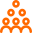

Issues-focused
Addressing disconnection within the self, and between the self and society.
- Mindful Living
- Wellbeing
- Education Excellence
The D. H. Chen Foundation advances compassion-based philanthropy through initiatives, partnerships and sector knowledge that respond to evolving social needs.
Our Foundation
The Challenge
Across individuals, communities and the impact sector, we see a growing need to rebuild connection, trust and the conditions for meaningful change.
Discover moreWithin the self
Between self and society

Within the impact sector
Addressing disconnection within the self, and between the self and society.
Supporting early to mid-stage social impact initiatives through compassion-based philanthropy.
Our Approach
We begin by understanding people, communities and the realities behind emerging social needs.
We work alongside like-minded partners to shape responses that are grounded, relevant and compassionate.
We bring together resources, knowledge and networks to help meaningful initiatives grow with resilience.
We embrace learning by doing, turning experience, reflection and even challenges into shared insight.
We make learning visible, so compassion-based practices can inspire broader change across the sector.

Investing Today, Impacting Tomorrow
Education Excellence

Cultivating Changemakers to Advance Social Inclusion
Above & Beyond Institute

Fostering Values-driven Life Exploration Education Through Cross-sector Collaboration
Education Excellence

A Landmark Social Innovation Award for Youth to Promote and Cultivate Compassion
Education Excellence

Bringing the Social Good Community Closer
Mindful Living

Promoting Compassion-based Values in School-based Curriculum
Mindful Living
Supporting Carers' Wellbeing through Exercise and Self-rediscovery
Wellbeing

Transforming Alzheimer’s Care Through Accessible Screening and Community Support
Above and Beyond